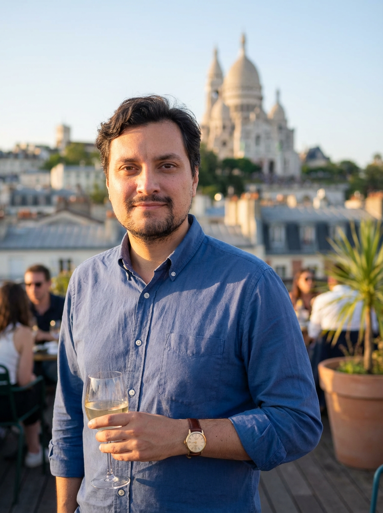

The guide behind the tours
Bonjour, je suis Thomas
A Real Parisian, WSET Certified, and obsessively curious about the artisans who keep this neighbourhood's food culture alive.

WSET Certified
Award in Wines
My story
A Parisian who never stopped being hungry
I've been living in Pigalle for many, many years. Wine and cheese were part of my life long before I could name what I was tasting. My father argued about Burgundy versus Bordeaux over every Sunday dinner. I absorbed it all without knowing what to call it.
After years animating wine tastings for friends and corporate events, and carrying many wine trips across Europe and the world, I enrolled in the WSET program. Getting WSET Certified was the click: it gave me the vocabulary for what I'd been feeling in glasses for fifteen years.
I launched Wine & Cheese Paris because I kept meeting travellers who wanted to understand Paris, not just Instagram it. They wanted a local's explanation, not a tour script. The tours I run now are the ones I always wished existed.
"The best thing about guiding is the moment someone tastes something for the first time and immediately wants to understand why it tastes that way."
Years living in Pigalle
Verified 5-star reviews
Artisan partner producers
Average rating (TripAdvisor)
Qualifications
The expertise behind every glass

WSET Certified
The Wine & Spirit Education Trust Level 3 is the international benchmark for wine expertise. It covers systematic tasting methodology, global regions, and quality factors. The only WSET-certified independent guide in Montmartre.
Professional Tour Operator, France
All tours comply with French tourism law. CERFA declaration filed, micro-enterprise registered with code APE 79.90.20. Your experience is legal, professional, and insured.
10+ Years in Pigalle
I've been living in Pigalle for many, many years. Every shop by name, every opening hour by heart, every back alley tourists walk past. The tours I run aren't a script: they're the result of years of daily curiosity.

My philosophy
Food is the best conversation starter
I designed these tours around a simple idea: you understand a place best through its food. Not through its monuments. Through the way its people eat.
Every tour I lead is different, because every group is different. I adapt the narrative to what makes you curious. Some groups want the history. Some want the chemistry. Some just want to eat. All of that is fine.
No scripts
Every tour is live. I read the group and adjust. If someone is a sommelier, we go deeper. If someone is a first-timer, we start from zero.
No tourist traps
Every stop is a place I actually shop at, or a producer I have a real relationship with. No kickbacks, no commissions.
Abundance over profit
The food cost per person is deliberately high. A small group that leaves full and happy is worth far more than a large group that leaves disappointed.
Artisan partners
The people who make the tours possible
Every stop on every tour is a producer I've built a real relationship with. They know our groups are small, curious, and genuinely interested: not just passing through.

Boulangerie
Rue des Martyrs Baker
A family bakery using 72-hour cold-fermented sourdough and stone-milled flour. The baker demonstrates the process to every group: not a scripted stop, but a real conversation.
Fromagerie

Fromagerie du Martyr
Family-run since 1962. The affineur opens his aging cellar for our groups: the most memorable moment of the tour.
Cave à Vin
Cave de la Fontaine
A stone-vaulted cave on the Rue des Martyrs. The owner opens the back room for our tasting finales: candlelit, intimate, exactly right.
Let's walk the neighbourhood together
Small groups, real producers, no scripts. Choose your experience below, or get in touch if you have questions about what's right for you.